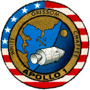
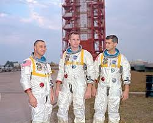

 Fue la primera misión tripulada del programa espacial estadounidense conocido como proyecto Apolo, cuyo objetivo consistía en alcanzar un alunizaje tripulado sobre la Luna.1 La prueba orbital planeada en la órbita baja terrestre del módulo de mando y servicio del Apolo no llegó a cumplir la fecha de lanzamiento prevista para el 21 de febrero de 1967, debido a un incendio en la cabina durante una prueba en la plataforma de lanzamiento 34, que se produjo el 27 de enero en el complejo de lanzamiento de la estación de la Fuerza Aérea de Cabo Cañaveral, matando a los tres tripulantes: el comandante piloto Virgil I. "Gus" Grissom, el piloto del módulo de comando Edward H. White II y el piloto Roger B. Chaffee, destruyendo también el módulo de comando (CM).1 El nombre "Apolo 1", elegido por la tripulación, se retiró oficialmente por la NASA en conmemoración a la fallecida tripulación el 24 de abril de 1967.1
 Inmediatamente después del incendio, la NASA convocó a la Junta de Revisión del Accidente del Apolo 204 para determinar las causas del incendio, y las dos cámaras del Congreso de Estados Unidos pusieron en marcha sus propias investigaciones del comité para supervisar la investigación de la NASA. Durante la investigación, un documento interno de la NASA citando problemas con el contratista principal del Apolo, North American Aviation, fue revelado públicamente por el entonces senador estadounidense Walter F. Mondale, y llegó a ser conocido como el "Informe Phillips". El avergonzado administrador de la NASA, James E. Webb, que desconocía la existencia del documento, dio inicio a la controversia con el programa Apolo. A pesar del descontento en el congreso estadounidense por la falta de apertura de la NASA, los dos comités del congreso dictaminaron que las cuestiones planteadas en el informe no tenían nada que ver con el accidente, y se dejó a la NASA continuar con el programa. Aunque la fuente de ignición que generó el incendio no pudo ser determinada de manera concluyente, las muertes de los astronautas se atribuyeron a una amplia gama de defectos de diseño y construcción con materiales letales en el módulo de comando del Apolo. Los vuelos tripulados Apolo fueron suspendidos por 20 meses mientras se corrigieron estos problemas. El vehículo de lanzamiento Saturno IB, SA-204, previsto para su uso en esta misión, más tarde se utilizó para el primer vuelo de prueba no tripulado en el módulo lunar (LM), misión denominada Apolo 5.2 La primera misión tripulada con éxito del programa Apolo fue volada por la tripulación de reserva del Apolo 1, el Apolo 7 en octubre de 1968.